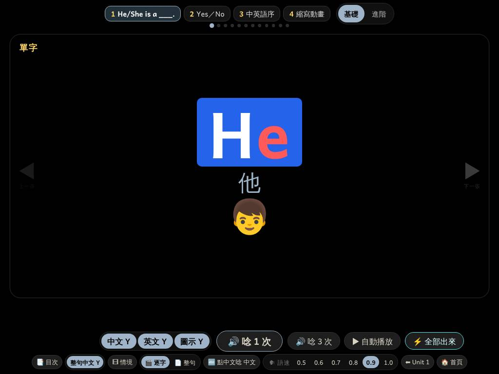
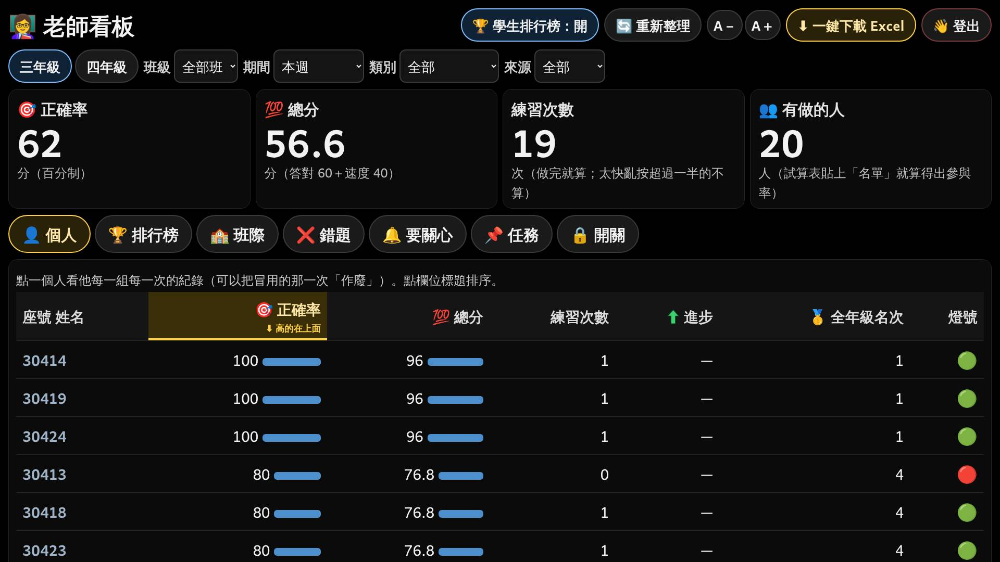
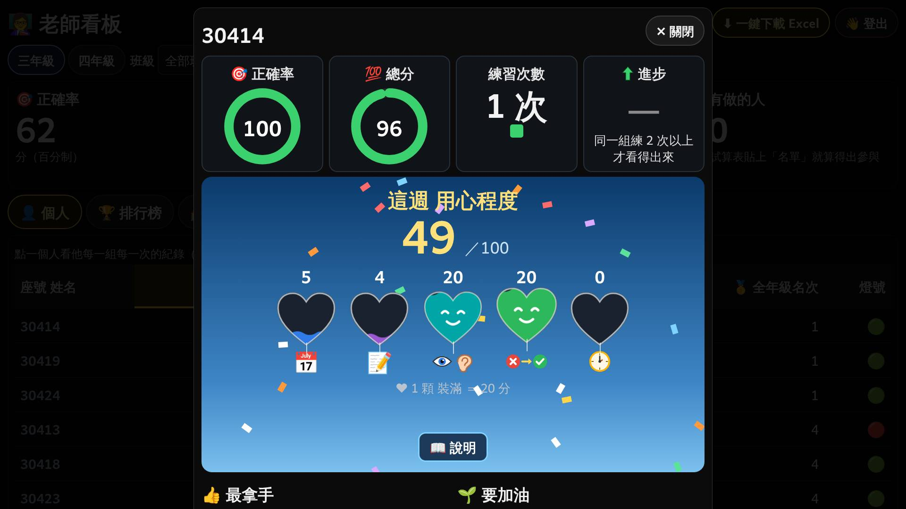
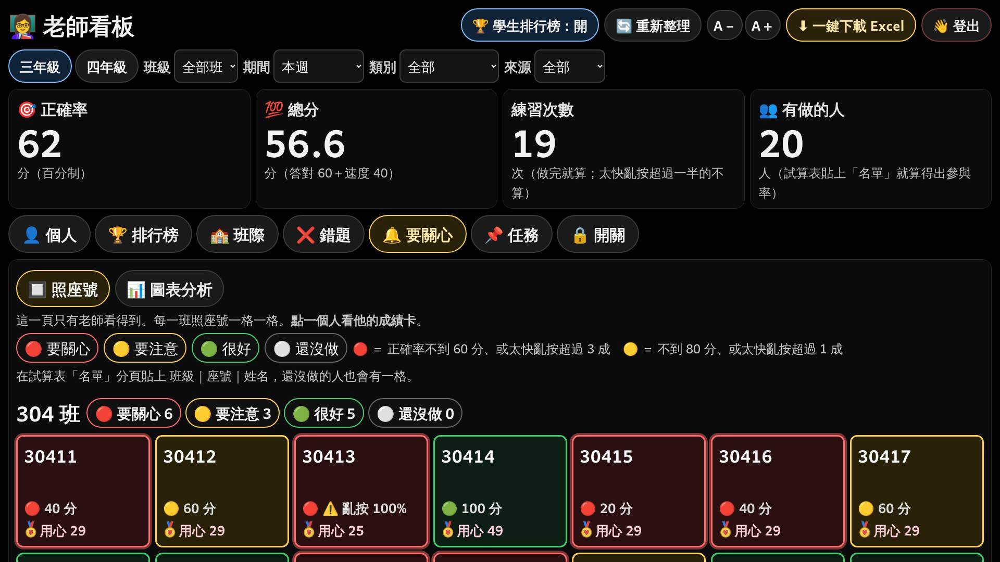
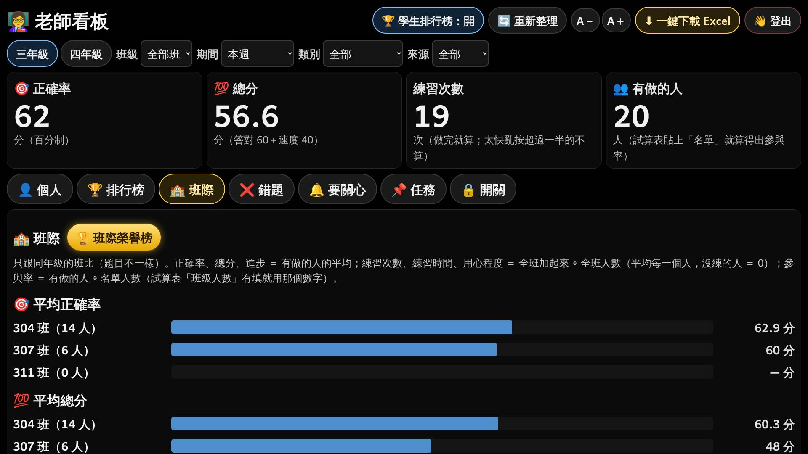

在家複習＋老師看板：動手前先問
這一頁只有問題，網站還沒改。老師回答以後，我會用老師自己的例子再對一次，對得上才動手。
✍️ 回答方式：直接打「1A 2甲 3A …」，或「全部照建議」。
綠色框 ＝ 我的建議。看不懂的題目，直接說「第 N 題看不懂」。
一、在家複習（第 1～5 題）
1四年級在家複習 Unit 2「縮寫動畫」：刪掉第 4 頁
| 第幾頁 | 內容 | 改了以後 |
|---|
| 1 | He is ＝ He’s | 留著 |
| 2 | She is ＝ She’s | 留著 |
| 3 | is not ＝ isn’t | 留著 |
| 4 | is not ＝ isn’t（又一次，換一個情境） | 刪掉 |
2主題按鈕放大：用哪一種樣子？
現在（iPad 橫放）：最上面一排小按鈕，「基礎｜進階」在最右邊，學生找不到。

甲闖關路線：一條路走到底建議
「基礎、進階」直接變成路上的一站，學生只要照順序往右走。
1基礎
1進階現在在這裡
2基礎下一個👆
2進階
3中英語序
4縮寫動畫
| 老師要的 | 怎麼看出來 |
|---|
| ① 現在該點哪一個 | 藍色虛線框＋👆 手指上下點，寫「下一個」 |
| ② 目前在哪一個 | 金色、放大、慢慢發光，寫「現在在這裡」 |
| ③ 下一步到哪裡 | 看完的一站打 ✔；最後一張卡下面的〔➡ 下一個主題〕照舊 |
乙兩排大按鈕：上面「主題」、下面「基礎｜進階」
1He/She is a ___.
2Yes／No現在在這裡
3中英語序
4縮寫動畫
⚠️ 兩排比較高，iPad 橫放時字卡會變小一點。
兩種都一樣：按鈕比現在大一倍以上、字至少放大到現在的 2 倍；iPad 直放、橫放、教室觸控螢幕都會量。
3「✔ 看完了」什麼時候打勾？
A看到這一站的最後一張卡就打 ✔（跟〔📝 做 5 題複習〕出現的時間一樣）建議
現在網站已經記得「誰看到最後一張」，直接用，不會兩個規則打架。
4「總首頁改了，在家複習也跟著改」是哪一個意思？
A已經放進在家複習的主題：老師改教學網站的字卡、題目、遊戲，在家複習自動一起改建議
現在本來就是同一份資料（改一次兩邊都變）。我再加一個檢查：兩邊不一樣，網站就不發布。
要放哪些新主題進在家複習，還是老師決定。
B總首頁「新增」的主題，也自動出現在在家複習
⚠️ 老師就不能自己挑哪些主題放進在家複習。
「老師鎖住每一個主題、題目、遊戲」已經在 D 組第 7 件做好了（老師看板〔🔒 開關〕），這次不動。
5新的大按鈕：只改在家複習，還是教學網站也改？
A只改在家複習（照原文）建議
老師上課用的教學網站，按鈕位置老師已經熟了，不動。
二、看字卡、聽字卡也算（第 6～8 題）
| 現在 | 改了以後 |
|---|
| ⏰ 練習時間 | ✅ 有算 | ✅ 有算 |
| 📅 練了幾天 | ❌ 不算 | ✅ 算 |
| 📝 練習次數 | ❌ 不算 | ✅ 算 |
| 🎯 正確率、💯 總分 | 不算 | 還是不算（看字卡沒有作答） |
6看字卡，怎樣算「練習次數 ＋1」？
A一站（例：「1 基礎」）從第一張看到最後一張，而且看了 1 分鐘以上 ＝ ＋1建議
例：小華（30412）看「1 基礎」12 張，花了 3 分鐘 ➜ 練習次數 ＋1。
只是一直按 ▶ 跳到最後（不到 1 分鐘）➜ 不加。同一站一天最多加 3 次（跟題目一樣）。
B看字卡每累積 5 分鐘 ＝ ＋1
例：小華這週看了 23 分鐘 ➜ ＋4。
C每打開一次字卡就 ＋1
⚠️ 一直打開、關掉就能刷次數。
7看字卡，怎樣算「練了 1 天」？
A那一天看字卡加起來 1 分鐘以上 ＝ 算 1 天建議
例：小華星期三只看了字卡 4 分鐘、沒有作答 ➜ 星期三算有練。
8一起改到哪裡？
A全部一起：成績卡、排行榜〔練習次數〕、❤ 用心程度第 1 項（幾天）第 2 項（幾次）、Excel建議
同一個數字到處都一樣，老師和學生才不會看到兩種答案。
B只算進 ❤ 用心程度，排行榜〔練習次數〕照舊只算題目和遊戲
這一題改的是「怎麼算」，要請老師重新部署一次（我會給大字版步驟頁網址）。
三、老師看板重新排版（第 9～18 題）
原則：所有內容、功能一個都不刪，只重新排。一個區塊 ＝ 一個重點，區塊最上面一句話就是重點。長長的說明收進〔❓〕，點了才出來。
9整個老師看板：用哪一種排法？
現在：上面兩排按鈕＋選單、四個大數字下面有長長的說明、七個分頁。

甲上面一條：年級＋Excel＋〔⚙ 更多〕；篩選縮成一行；分頁上面有紅色數字建議
👩🏫 老師看板三年級四年級⬇ Excel⚙ 更多
🔎 全部班 · 本週 · 全部類別 · 在校＋在家 〔改〕
👤 個人🏆 排行榜🏫 班級排行榜❌ 錯題🔔 要關心6📌 任務🔒 開關
🔴 6 人要關心：30411、30413、30415 …
（下面是全班表格）
| 現在 | ➜ | 改了以後 |
|---|
| 排行榜開關、重新整理、A－A＋、登出 排在最上面 | ➜ | 收進〔⚙ 更多〕，點了才出來 |
| 四個選單一字排開 | ➜ | 一行字寫「現在看什麼」，點〔改〕才打開 |
| 大數字下面長長的說明 | ➜ | 只留大數字＋名字；說明收進〔❓〕 |
| 要關心幾個人，要點進去才知道 | ➜ | 分頁上面直接一個紅色數字 |
乙左邊一直排選單、右邊內容
⚠️ iPad 直放時左邊選單會擠到上面去，內容變窄。
10老師說的「點入〔個人〕的頁面」，是哪一頁？
或
② 點一個學生跳出來的成績卡

C① ② 都重新排建議
兩頁都在第 9 題的新樣子裡，一起排才整齊。
11成績卡（點一個學生）：用哪一種排法？
甲最上面一句總結，下面一塊一塊往下排建議
30412 小華 這週：正確率 80、練習 6 次、用心 87
👍 最拿手 1-1 基礎 ｜ 🌱 要加油 3 中英語序
每一塊最上面那一句 ＝ 那一塊的重點，不用看圖也懂。內容跟現在一模一樣，一個都不少。
乙上面四個分頁籤，一次只看一種
⚠️ 很乾淨，但要一直點才看得到全部。
12〔🔔 要關心〕照座號那一頁：每一格放什麼？
現在：上面兩行說明、圖例跟說明擠在一起，每一格四行。〔📊 圖表分析〕那一頁完全不動。

改了以後：最上面先一塊重點，說明收進〔❓ 顏色怎麼看〕。
304 班：🔴 6 人要關心 🟡 3 人要注意 🟢 5 人很好 ⚪ 0 人還沒做
乙每一格三行：號碼姓名／大大的分數／❤ 用心建議
整格塗顏色，就不用再放 🔴🟡🟢 小圓點；分數放大，一眼看到。
甲每一格兩行：號碼姓名／大大的分數（用心程度點進去成績卡才看）
「測試」是假的名字，網站上會是老師試算表裡的名字（名字不會寫進網站程式）。
13新的「班級排行榜」：用哪一種樣子？
現在的〔🏫 班際〕：一個項目一張長條圖，要一直往下捲，看不出「哪一班哪一項最好」。

甲冠軍表：橫的是項目、直的是班級，每一項第 1 名金色＋👑建議
| 班級 | ⏰ 最認真練習 | 🎯 成績最優 | ⬆ 進步最多 | ❤ 最用心 |
|---|
| 304 班 | 21 分鐘 | 62.9 | ＋4 | 71 |
| 307 班 | 35 分鐘 | 60 | ＋9 | 58 |
| 311 班 | 12 分鐘 | 55 | ＋2 | 40 |
看橫的 ➜ 這一項哪一班最好；看直的 ➜ 這一班哪幾項最好。一張表兩個答案。
乙每一項一個小頒獎台（第 1 名最大）
⏰ 最認真練習
🥇 307 班
🥈 304 🥉 311
⚠️ 一項一個台子，要看完全部才知道「304 班哪幾項最好」。
14班級排行榜放在哪裡？
A〔🏫 班際〕改名〔🏫 班級排行榜〕：冠軍表放最上面，原本的長條圖、〔🏆 班際榮譽榜〕全部留在下面建議
B新增一個分頁〔🏫 班級排行榜〕，〔🏫 班際〕照舊
⚠️ 分頁變 8 個，兩頁內容很像。
15班級排行榜比哪幾項？（課後班 400 照舊不比）
A7 項：四種最高榮譽（最認真練習、成績最優、進步最多、最用心）＋ 💯 總分 ＋ 練習次數 ＋ 👥 有做的人（幾成）建議
最高榮譽 4 項放前面、顏色最亮；後面 3 項只是排行，不發獎。
16❤ 用心程度動畫：怎麼變簡潔？
現在：五顆愛心、上面數字、下面圖示、會笑會跳、底線、說明一行，眼花撩亂。
甲左邊一顆大愛心裝到 87；右邊五條長條，一條 ＝ 一項建議
一眼就懂：大愛心 ＝ 總分，長條 ＝ 哪一項多、哪一項少；最少那一項的圖示搖一搖，下面一句「💡 請 …」。〔📖 說明〕照舊。
乙五顆愛心留著，但拿掉笑臉、跳動、底線，數字放進愛心裡
學生平板和老師成績卡是同一個動畫，一起換。小華的例子：📅 15、📝 20、👁 16、✗➜✓ 16、⏰ 20 ＝ 87。
17「每一次都不一樣的動畫」是放在哪裡？
A❤ 用心程度那一幕：每一次換一個不同的主題（不只愛心），內容一樣是「總分＋五項＋最少那一項」建議
學生每一次都期待「這次是什麼」，但看法永遠一樣：大的 ＝ 總分、五個小的 ＝ 五項，一看就懂。
B做完以後的每一幕（🎯 正確率、⏰ 練習時間、❤ 用心程度）都每一次換風格
⚠️ 正確率圓圈、時鐘學生已經看熟了，一直換反而要重新看懂。
🏆 榮譽榜（名次上升才演）本來就有 12 種風格輪流，不動。
18不一樣的主題：這 10 種，哪幾種不要？
每一種都只有一個區塊：中間大數字 ＝ 用心程度；五個小東西 ＝ 五項，依序亮起來；最少的那一個閃金光，下面一句「💡 請 …」。學生看完心裡的話是「老師看見我了」。
稱讚的字一律寫「你做了什麼」（例：「這週 練了 3 天」），不寫「你好聰明」——這是 Mueller & Dweck（1998）的研究：稱讚努力和做法，孩子遇到困難比較不放棄（D 組已經打開原文核對過）。
下面是小草圖，只看「是什麼東西」；真的動畫會更精緻、放大到真的大小。
A10 種全部都要，每一次洗牌、跟上一次不一樣建議
老師以前說不喜歡的「開花」「倒瓶子」不放；我做好以後會放大到真的大小給老師看一次，老師說好才上線。
四、老師回答以後
| 順序 | 做什麼 |
|---|
| ① | 用小華（30412）和老師的答案，再對一次（一頁大字） |
| ② | 老師說「對」➜ 動手：在家複習 ➜ 看字卡算次數 ➜ 老師看板排版 ➜ 用心程度動畫 |
| ③ | 每一頁在 iPad 橫放、直放、教室觸控螢幕量過，0 個失敗才上線 |
| ④ | 第 6～8 題改了「怎麼算」➜ 老師要重新部署一次（大字版步驟頁） |